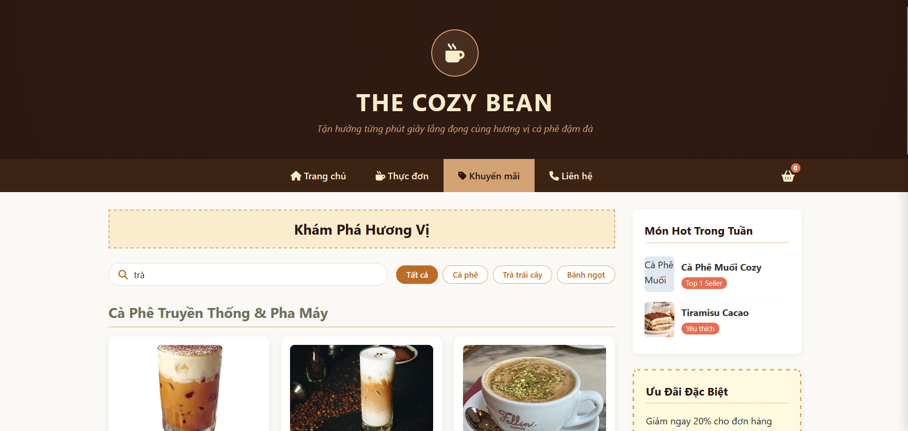
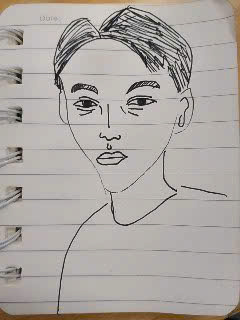
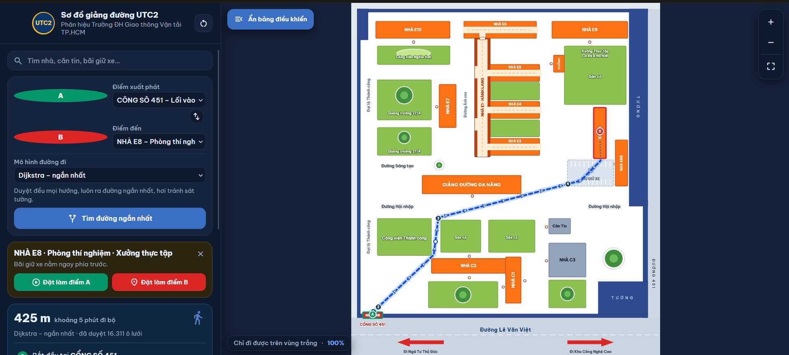
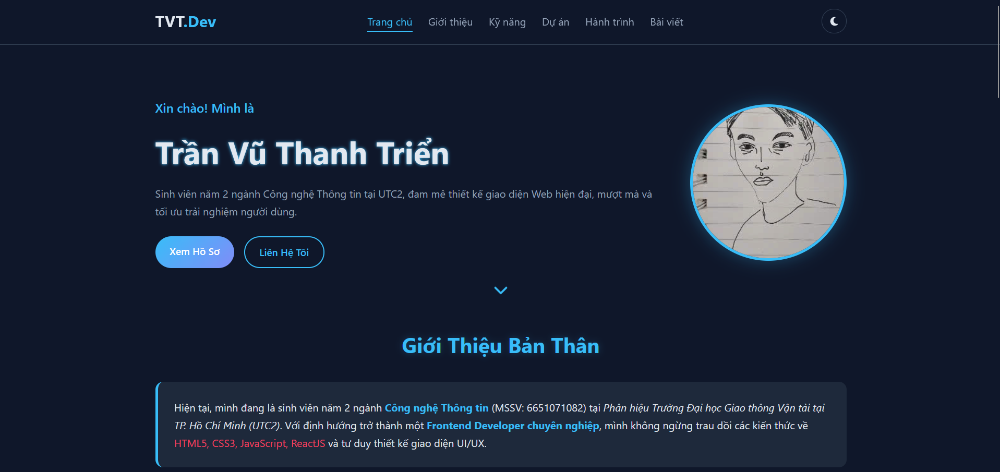

Website Thực Đơn Quán Cà Phê
Giao diện giới thiệu thực đơn quán cà phê sang trọng, xây dựng trên HTML5 chuẩn semantic và hiệu ứng CSS3 mượt mà.
Xin chào! Mình là
Sinh viên năm 2 ngành Công nghệ Thông tin tại UTC2, đam mê thiết kế giao diện Web hiện đại, mượt mà và tối ưu trải nghiệm người dùng.

Hiện tại, mình đang là sinh viên năm 2 ngành Công nghệ Thông tin (MSSV: 6651071082) tại Phân hiệu Trường Đại học Giao thông Vận tải tại TP. Hồ Chí Minh (UTC2). Với định hướng trở thành một Frontend Developer chuyên nghiệp, mình không ngừng trau dồi các kiến thức về HTML5, CSS3, JavaScript, ReactJS và tư duy thiết kế giao diện UI/UX.

Giao diện giới thiệu thực đơn quán cà phê sang trọng, xây dựng trên HTML5 chuẩn semantic và hiệu ứng CSS3 mượt mà.

Ứng dụng hỗ trợ tìm tuyến đường ngắn nhất trong khuôn viên trường học, tích hợp giao diện chọn điểm đến trực quan.

Trang giới thiệu bản thân với hiệu ứng chuyển động mượt, chế độ sáng/tối và bố cục responsive hoàn chỉnh.
Nhập học ngành Công nghệ Thông tin (MSSV: 6651071082), theo học chương trình cử nhân, tập trung vào lập trình web, cấu trúc dữ liệu và giải thuật.
Bắt đầu đi sâu vào các môn chuyên ngành, chủ động xây dựng các dự án cá nhân như website này để rèn luyện HTML5, CSS3 và JavaScript.
Mục tiêu tìm kiếm cơ hội thực tập để áp dụng kiến thức vào các dự án thực tế tại doanh nghiệp.
Tổng hợp kinh nghiệm thực tế giúp dàn trang nhanh chóng, không bị vỡ layout trên mọi thiết bị màn hình...
Những thói quen nhỏ giúp trang web chạy nhẹ hơn: debounce, lazy-load, tránh reflow không cần thiết...
Chia sẻ góc nhìn cá nhân về trải nghiệm người dùng, độ tương phản và cách chọn bảng màu phù hợp...